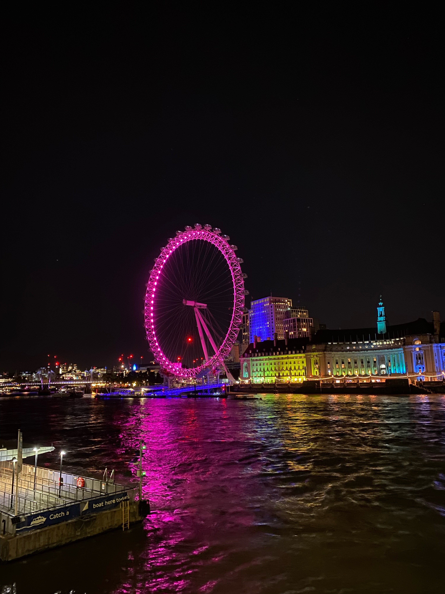
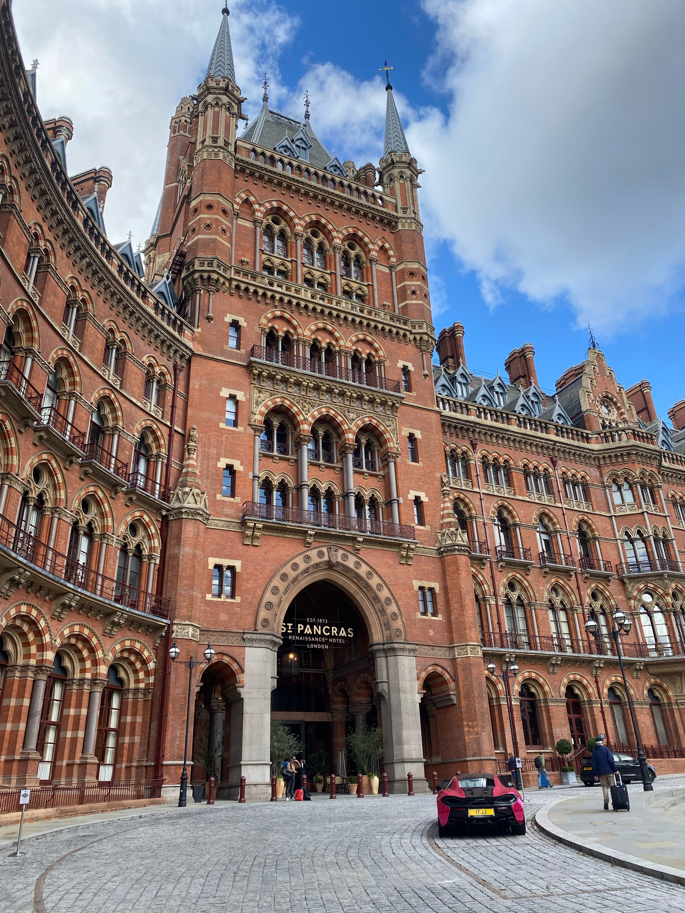

Londres
🕰️
El Big Ben es en realidad el nombre de la campana, no del reloj o la torre.
🚇
Londres tiene una de las redes de metro más antiguas del mundo.
🏺
El famoso Museo Británico alberga artefactos de todo el mundo, incluidos los **Mármoles de Elgin**.
🌳
Hyde Park es uno de los parques urbanos más grandes de Londres y es famoso por el Speaker's Corner.

